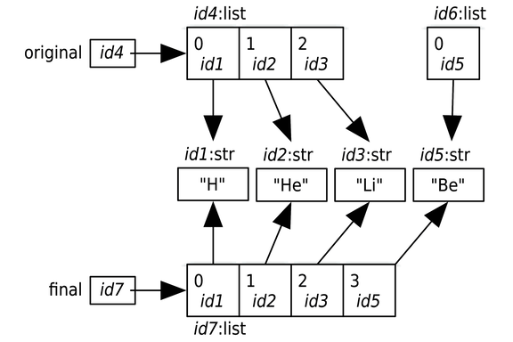
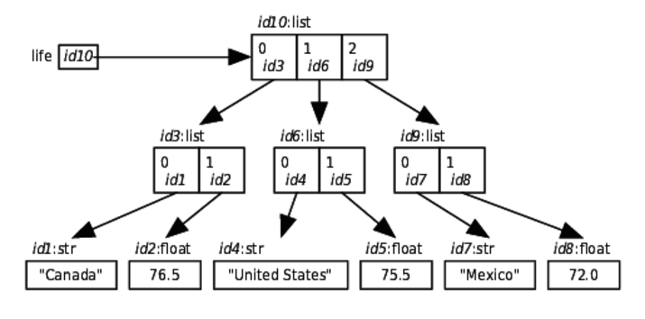
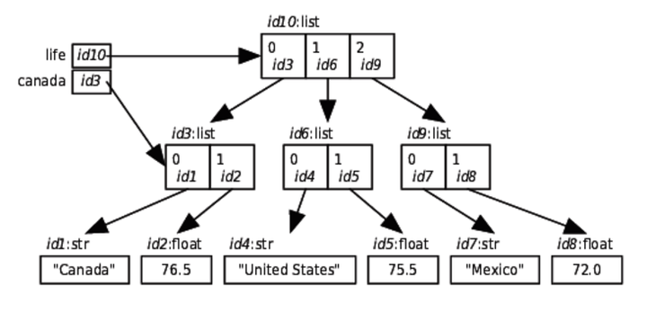

Functions Revisited
Contents
Functions Revisited#
Function Variations#
no arguments
positional/fixed/required arguments
required arguments and optional arguments
keyword arguments
Function Input Example 1#
def func(spam, eggs, toast=0, ham=0): # first 2 required
print (spam, eggs, toast, ham)
func(1, 2) # output: (1, 2, 0, 0)
func(1, ham=1, eggs=0) # output: (1, 0, 0, 1)
func(spam=1, eggs=0) # output: (1, 0, 0, 0)
func(toast=1, eggs=2, spam=3) # output: (3, 2, 1, 0)
func(1, 2, 3, 4) # output: (1, 2, 3, 4)
Function Input Example 2#
def f(a, *args, **kwargs):
print(a, args, kwargs)
f(1, 2, 3, x=1, y=2)
Function Input Example 3#
def intersect(*args):
res = []
for x in args[0]: # scan first sequence
for other in args[1:]: # for all other args
if x not in other: break # item in each one?
else: # no: break out of loop
res.append(x) # yes: add items to end
return res
def union(*args):
res = []
for seq in args: # for all args
for x in seq: # for all nodes
if not x in res:
res.append(x) # add new items to result
return res
s1, s2, s3 = "SPAM", "SCAM", "SLAM"
intersect(s1, s2)
union(s1, s2)
intersect([1,2,3], (1,4))
intersect(s1, s2, s3)
union(s1, s2, s3)
Function Scope#
Ref: Python for Programmers by Paul Deitel and Harvey Deitel
Note
In many programming languages there are two ways to pass arguments–pass-by-value and pass-by-reference (sometimes called call-by-value and call-by-reference, respectively):
With pass-by-value, the called function receives a copy of the argument’s value and works exclusively with that copy. Changes to the function’s copy do not affect the original variable’s value in the caller.
With pass-by-reference, the called function can access the argument’s value in the caller directly and modify the value if it’s mutable.
Python arguments are ALWAYS passed by reference. SOme people call this pass-by-object-reference, because “everything in Python is an object.” When a function call provides an argument, Python copies the argument object’s reference–not the object itself–into the corresponding parameter. This is important for performance. Function often manipulate large objects–frequency copying them would consume large amount of computer memory and significantly slow down program performance.
immutable: int, float, string, tuple, frozen set
mutable: list, dict, set
If you pass a mutable data type to a function, changes you make persist outside of the function!
x = 7
id(x)
def cube(number):
print('id(number):', id(number))
return number ** 3
cube(x)
def cube(number):
print('number is x:', number is x) ## The Python's is operator returns True if its two operands have the same identify
return number ** 3
cube(x)
def cube(number):
print('id(number) before modifying number:', id(number))
number **=3
print('id(number) after modifying number:', id(number))
return number ** 3
cube(x)
def cube_list(lst):
print('id(lst) before modifying list:', id(lst))
lst[1] = 3
print('id(lst) after modifying list:', id(lst))
return lst
x_lst = [6, 7, 8]
print(id(x_lst[1]))
cube_list(x_lst)
id(x_lst)
x_lst
id(x_lst[1])
Memory Models#
original = ['H', 'He', 'Li']
final = original + ['Be']

life =[['Canada',76.5],['United States', 75.5],['Mexico', 72.0]]

life = [['Canada', 76.5], ['United States', 75.5], ['Mexico', 72.0]]
canada = life[0]

Scope Example 1#
variable = 'Global reporting!'
def use_variable_global():
## since variable is outside the function
print(variable)
def use_variable_local():
variable = 'Local reporting!'
print(variable)
# def use_variable_global():
def change_global_inside_function():
global variable
variable = 'I have been changed!'
print(variable)
print(variable)
use_variable_global()
use_variable_local()
change_global_inside_function()
print(variable)
Scope Example 2#
def function1(my_list, my_variable):
print('my_list before change inside function1', my_list)
print('my_variable before change inside function1', my_variable)
my_list.append(30)
my_variable = 10
print('my_list after change inside function1', my_list)
print('my_variable after change inside function1', my_variable)
def function2(my_list, my_vairable):
# https://stackoverflow.com/questions/2612802/how-to-clone-or-copy-a-list
my_list = my_list[:]
my_list.append(90)
my_variable = 45
print('my_list after change inside function2', my_list)
print('my_variable after change inside function2', my_variable)
def function3():
my_list = [1, 2, 3, 4]
my_variable = function2(my_list, my_vairable):
# https://stackoverflow.com/questions/2612802/how-to-clone-or-copy-a-list
my_list = my_list[:]
my_list.append(90)
my_variable = 45
print('my_list after change inside function2', my_list)
print('my_variable after change inside function2', my_variable)
function1(my_list, my_variable)
print('my_list after change1 inside function3', my_list)
print('my_variable after change1 inside function3', my_variable)
function2(my_list, my_variable)
print('my_list after change2 inside function3', my_list)
print('my_variable after change2 inside function3', my_variable)
function3()